|
|||||||||||||||||||||||||||
|
|||||||||||||||||||||||||||
|
「雪を知る」 雪崩講習会 ２００８ |
| 開 催 日 | ２００８年２月２～３日 | |||
| 世 話 人 | 松澤 | |||
| 報 告 者 | 川村（京大山岳部）、松坂、早川（英） | |||
| 参加者数 | １０名 （会員 ６名、会員外 ４名） | |||
| 雪崩地帯に踏み込み、山スキーを楽しもうとする人たちには、雪崩の知識・セルフレスキュー訓練は必須である。 雪質・斜面の見方、安全対策、レスキュー実技など、安全で楽しいスキーツアーのために、多方面から雪崩を学び、フィールド体験を積んでいく世界基準（カナダ雪崩協会）のカリキュラム・初級編が、昨シーズンに引き続き実施された。 ＮＰＯ法人日本雪崩ネットワークの講師陣の協力で実施されたこのプログラムは、室内の学習とフィールドでの体験を組み合わせていて、実に充実している。 以下、講習会に参加された京大山岳部の川村氏の報告書を引用しながら説明する。 （報告書を提供して頂いた川村氏に感謝します） |
| １日目 フィールド・スタディ |
| ２/２（土） 晴れ後曇
栂池スキー場ゴンドラ下集合。 スキー場から林道に入り、早大小屋を目指す。 途中斜面のトラバースで間隔をあけて歩く。 過去に実際に雪崩があった場所らしい。 |
| 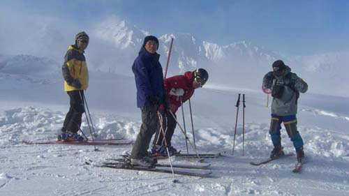 |
| 講習会に備え、前日、八方尾根スキー場で予備練習。 この日、ここ１週間程も続いた爆弾低気圧がようやく鉾を 収めたのか、夕刻に一瞬荘厳な白馬三山が姿を見せた。 |
| 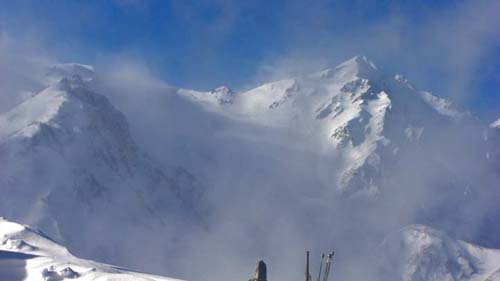 |
| 吹雪の間に一瞬姿を現した白馬頂上が美しい。 手前は第１ケルン。 |
| 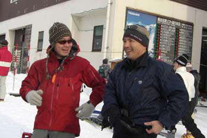 | A | 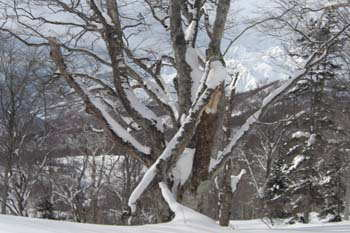 |
| ２日午前８：００、五月女先生（右）と高橋先生（左）がご登場、受講生１１名集合、ブリーフィング |
典型的なフォーク・ツリーだ。 この斜面は過去 たびたび雪崩で木々がへし折られたということだ。 １人づつ注意深くトラバースすることが重要だ。 |
|
早大小屋の上を100mほど上がり、南斜面で講師の五月女さんがスノーピットを掘る見本を チェック項目 |
| 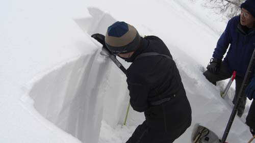 |
| ２日午前、この日は気温－６℃快晴 五月女さんのコンプレッション・テストをじっくり見学する。 上から３４ｃｍにあった弱層がわずかの力でグサッと崩れた。 |
|
その後、スキーで早大小屋まで下り、早大小屋周辺でビーコン探し。 (というか、ビーコンの |
| 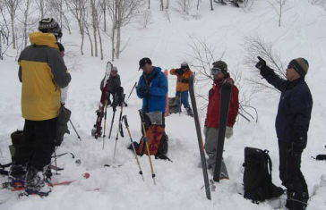 | A | 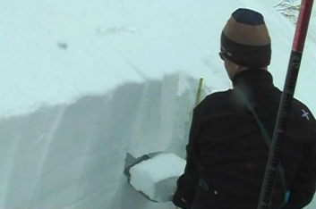 |
| ２日午後は早大小屋上部で、ビーコン捜索の実習だ。 ビーコンの性能にも依るが、何をおいても自分のビーコンをマスタすることだ。 |
ブロードバンド環境の方は、 上の写真をクリックしてビデオをご覧下さい ホームページ掲載のため圧縮していますので、画質の悪い点は、ご容赦下さい |
| １日目 座学 |
|
旅館に帰って座学。最も重要なのは地形。 ｢積雪の安定状況は?｣という問いに対する答えは｢地形｣である、と言う人もいるくらいだと言っていた。 その日の栂池の積雪安定性はFairかPoorのどちらかとのこと。 まあ、Fairだろう、と言う話になった。 ※積雪安定性はVery Good～Very Poorで5段階に分類される。 Fairはグレーゾーンであり、場所によっては雪崩の危険は十分にある、というもの。 講習会の目的についても言及していたが、｢雪崩ネットワーク｣を形成することらしい。 すなわち、講習会を受け、同じテスト内容で同じ判断基準を共有した人たちが増える。
その人たちが日本各地でテストを行い、結果をインターネットで公開する。 すると家に居ながらにして、各地の積雪状況を知ることができる、というものであるようだ。 その他、山の写真を見てのルート取りの議論。 同日、妙高で雪崩事故。高速第３から三田原へのルートで沢の横断中(?横断後の雪庇の乗越し?)に雪崩発生。 300m程流され、大腿骨骨折とのこと。 |
| 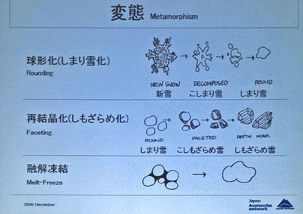 |
| 最も重要な要素は雪質だ。 しもざらめ、こしもざらめ等が代表的な弱層となる。 |
| 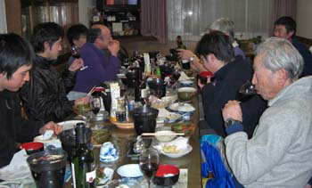 | A | 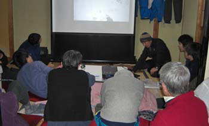 |
| 勉強の後での団欒の一時は、有意義だ。 フランス・ワインや新潟の銘酒を味わう。 |
夜の９時半まで、熱心な座学が続く。 スライドを交えた世界あちこちの雪崩情報に注目する |
| 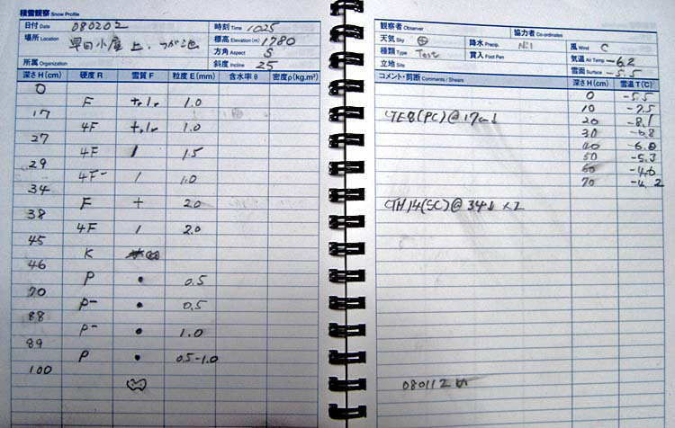 |
| コンプレッション・テストによる、この日の積雪断面観察記録だ。 深さ３４～３８ｃｍ間に弱層が発見される。 この日の三田原山で、プロ・スノーボーダーが雪崩に埋まった。 この層が面発生雪崩となった。 報告ではサイズ２．５、流下距離約３００ｍ、破断面の幅約２０ｍとあった。 |
| 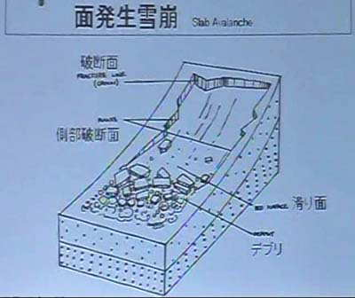 |
| ブロードバンド環境の方は、 上の写真をクリックしてビデオをご覧下さい ホームページ掲載のため圧縮していますので、画質の悪い点は、ご容赦下さい |
| ２日目 フィールド・スタディ |
|
２/３（日） 雪 出発前、講師が雪質について推測を述べる。 安定方向に作用するプラスの要因はなく、新雪により不安定方向に作用するだろう。 よって、FairかPoor、どちらかだろうとのこと。昨日からの降雪により新雪15cmほど。
昨日同様に早大小屋まで上がり、今度はひよどり峰への稜線を目指す。 これを2回繰り返し、下山開始。 旅館に帰りまとめ。 スノーピットの結果の評価方法。 |
| 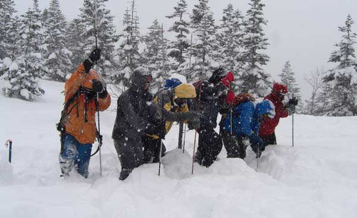 |
| ２月３日、終日行き止まず。 プロービングの特訓を受ける。 「右突けーッ」、「上げー」、「左突けーッ」、「上げー」、「一歩前へー」 ……。 こんな人数でいくら突いても当らん。 ビーコンを装着していないということは、 まさに自殺行為だということが、まざまざと判った。 |
|
コンプレッションテストとは リスクの軽減策として第一に重要なのは、雪崩地形をはずすこと。 雪崩地形に行くときも一人ずつ通過するなどして、できるだけリスクを軽減する。 雪崩地形に居なくとも、雪崩の走路、堆積区にいる可能性があり、上にスキーヤーがいて雪崩を発生させるかもしれない。 全体を見て考える。 積雪安定性は地形とあわせて評価する。 そして、積雪安定性は一義的にきめらるものではなくパーティ内でも十分に議論される必要がある。 その各人の判断において何を重視するのか、その過程が重要であるのだから。 雪をじっくり観察するということをしたことがなかったため非常に参考になりました。 本だけ読んでもよく分からないことが多いので、実際に目にしてみると納得がいきます。 参加してみて、過去、自分が以下に雪に注意を払ってこなかったか、あるいはその注意がいかに主観的なものであったのか知ることができました。 この講習を受けて今後の山行にいかせるのはコンプレッションテストを行うかどうか、という点です。 手で行う弱層テストよりは遥かに客観性に優れています。 問題は時間がかかりそうということと、いざ自分達だけで行うときにその客観性は保たれるのか、の2点であると思います。 前者は慣れれば問題とはならないはずです。 後者に関しては山岳部の性質上(4年で入れ替わる)難しそうですが、とにかくやってみないことには判断のしようがありません。 次回の山行では行ってみようと思います。 |